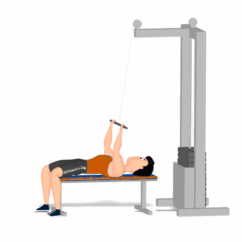

Rosca no Cabo (Deitado)

Exercício para fortalecimento e hipertrofia dos bíceps braquiais.
Ficha Técnica
Tipo: Musculação
Grupo Muscular: Bíceps
Aparelho: Nenhum
Músculos: Nenhum
Como realizar
- Posicione um banco ou colchonete logo abaixo à uma roldana alta;
- Deite de costas com a cabeça próxima ao aparelho;
- Segure a barra com as palmas voltadas para trás e os cotovelos estendidos;
- Flexione os cotovelos até a barra ficar próxima a testa, utilizando a força dos bícep;
- Músculos contraídos por um instante estenda os cotovelos retornando à posição inicial de forma controlada;
- Repita os movimentos. Durante toda a execução, manter os braços imóveis movimentando somente os antebraços.
 RC STORE
RC STORE